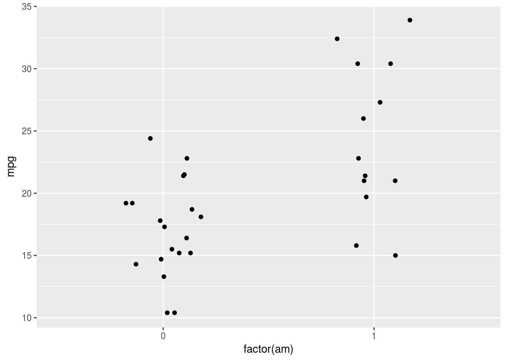

データの可視化
紀ノ定 保礼（静岡理工科大学）
2018-03-15
可視化の重要性
セミナー当日に，別スライドにて紹介。主な引用文献は以下。
- Weissgerber, T. L., Milic, N. M., Winham, S. J., & Garovic, V. D. (2015). Beyond bar and line graphs: time for a new data presentation paradigm. PLoS biology, 13(4), e1002128
- Download the Datasaurus: Never trust summary statistics alone; always visualize your data
- Same Stats, Different Graphs: Generating Datasets with Varied Appearance and Identical Statistics through Simulated Annealing
ggplot2による可視化の文法
初期準備
まず，ggplot2パッケージをインストールしましょう。 ggplot2はtidyverseパッケージに包含されているので，以下のようにtidyverseをインストール・ロードすることをおすすめします。最後に述べますが，dplyrやforcats等，tidyverseに包含されている他のパッケージと併用したときに，ggplot2の真価は発揮されます。
もちろん，ggplot2を単体でインストールすることも可能です。
install.packages("tidyverse")
library(tidyverse)もう一つだけ準備をしましょう。ggplot2は，幾重にも絵具を重ねて最終的に一枚の絵を描く，油絵のような描画システムです。そこで，まずは新品のキャンバスを用意しましょう。以下のコードでは，新品のキャンバスを，gというオブジェクトに格納しています。
print(g)と入力することで，オブジェクトの中身を出力することができます。この時点ではまだ絵の具を使っていないので，キャンバスだけが表示されます。
g <- ggplot()
print(g)
幾何学的オブジェクト：geom
ではいよいよ可視化に取り掛かりましょう。ここではRに最初から入っているmtcarsデータセットを用います。このデータセットには，32種類の自動車の性能に関するデータが収められています。各変数の詳細は，Rのコンソールで?mtcarsと入力して確認してください。
data(mtcars)
head(x = mtcars, n = 5) #5行だけ表示# A tibble: 5 x 11
mpg cyl disp hp drat wt qsec vs am gear carb
* <dbl> <dbl> <dbl> <dbl> <dbl> <dbl> <dbl> <dbl> <dbl> <dbl> <dbl>
1 21.0 6. 160. 110. 3.90 2.62 16.5 0. 1. 4. 4.
2 21.0 6. 160. 110. 3.90 2.88 17.0 0. 1. 4. 4.
3 22.8 4. 108. 93. 3.85 2.32 18.6 1. 1. 4. 1.
4 21.4 6. 258. 110. 3.08 3.22 19.4 1. 0. 3. 1.
5 18.7 8. 360. 175. 3.15 3.44 17.0 0. 0. 3. 2.ggplot2では，データを幾何学的オブジェクト（geometric object）に当てはめて可視化します。クッキーを作るために生地を作った時，星や円等の様々な型を押し当てると，その通りの形にくりぬくことが出来るのとと同じように，データをgeom_bar()に与えると棒グラフが，geom_point()に与えると散布図が出来上がるわけです。
代表的なgeomを以下に抜粋しました。これらはほんの一部に過ぎず，ggplot2には非常に多くのgeomが用意されています。詳しくは公式サイトを参照してください。事例もコード付きで紹介されているので，非常に助かります。
| geom | 可視化される方法 |
|---|---|
geom_bar() |
棒グラフ |
geom_line() |
折れ線グラフ |
geom_point() |
散布図 |
geom_boxplot() |
箱ひげ図 |
geom_errorbar() |
誤差棒 |
では記法を説明します。ここでは排気量dispと車体重量wtの関係を散布図で表します。 最低限必要な記述は以下の二点です。
- どのデータセットを用いるか
data =
- そのデータセットの中の，どの変数をグラフの要素（例：X軸，Y軸）に割り当てるか（マッピングと呼ぶ）
mapping = aes()
各geomは独立のレイヤーを構成し，キャンバスの上にgeomを重ねることで，絵が完成します。以下のどちらの記法も可能ですが，今回は後者の記法で説明を行います。
# 方法1
g <- ggplot() + geom_point(data = mtcars, mapping = aes(x = disp, y = wt))
# 方法2
g <- ggplot()
g <- g + geom_point(data = mtcars, mapping = aes(x = disp, y = wt))
# 出力
print(g)
レイヤーは幾重にも重ねることが可能です。例えば以下の例では，マニュアル車とオートマ車が別々のデータセットに含まれていますが，散布図のレイヤーを二枚重ねることで，同じ図を描くことが可能です。
mtcars_a <- subset(mtcars, am == 0) #オートマ車
mtcars_m <- subset(mtcars, am == 1) #マニュアル車
g <- ggplot()
g <- g + geom_point(data = mtcars_a, mapping = aes(x = disp, y = wt))
g <- g + geom_point(data = mtcars_m, mapping = aes(x = disp, y = wt))
print(g)もちろん異なるgeomを重ねることも可能です。以下の例では，散布図の上にgeom_smooth()で近似直線を重ねて描いています。method = "lm", se = FALSEという引数については後述するので，ここでは気にしないでください。
g <- ggplot()
g <- g + geom_point(data = mtcars, mapping = aes(x = disp, y = wt))
g <- g + geom_smooth(data = mtcars, mapping = aes(x = disp, y = wt), method = "lm",
se = FALSE)
print(g)コラム
以下のコードは，data = mtcars, mapping = aes(x = disp, y = wt)という部分が複数のレイヤーで共通しているのに，毎回書くのは面倒です。
g <- ggplot()
g <- g + geom_point(data = mtcars, mapping = aes(x = disp, y = wt))
g <- g + geom_smooth(data = mtcars, mapping = aes(x = disp, y = wt), method = "lm",
se = FALSE)
print(g)新品のキャンバスを用意する関数ggplot()は，初期設定を与えることができます。その設定は各レイヤーに自動で継承されます。したがって上のコードは，以下のように書くことも可能です。
g <- ggplot(data = mtcars, mapping = aes(x = disp, y = wt))
g <- g + geom_point()
g <- g + geom_smooth(method = "lm", se = FALSE)
print(g)水準の識別
排気量が大きくなるほど車体重量が重くなる，右肩上がりの傾向が確認されました。さらに他の変数の影響を検証してみましょう。ここではシリンダー数cyl別に，点の色を区別してみます。以下のように，mapping = aes()の中で色colourにマッピングする変数を指定します。
g <- ggplot(data = mtcars, mapping = aes(x = disp, y = wt, colour = cyl))
g <- g + geom_point()
print(g)シリンダー数は整数型の変数なので，連続変数とみなされ，色がグラデーションで表現されます。
table(mtcars$cyl)
4 6 8
11 7 14 シリンダー数を因子型とみなすと，水準ごとに異なる色が自動で割り当てられます。
g <- ggplot(data = mtcars, mapping = aes(x = disp, y = wt, colour = factor(cyl)))
g <- g + geom_point()
print(g)この，「自動で」という点がポイントです。ggplot2を使わずに点の色を塗り分けようとすると，各水準の色を自分で指定しなければならないため，水準が増えるほど手間がかかってしまいます。
これらの見栄えに関わる設定をエステティック（aesthetic）と呼びます。他にも以下のようなエステティックがあります。
| エステティック | 効果 |
|---|---|
colour |
色（輪郭） |
fill |
色（塗りつぶし） |
size |
大きさ |
shape |
点の形状 |
linetype |
線の種類 |
alpha |
透過度 |
コラム
ここまで，ある変数の値に応じてエステティックを変える方法を説明してきました。しかし，すべての点の大きさを赤色にする，すべての線を破線にするなど，変数の値によらずにエステティックを変えたい場合もあるでしょう。
そのような場合は以下のように，aes()の外で指定を行ってください。変数ならばaes()の中，定数ならばaes()の外，と覚えるとよいでしょう。
g <- ggplot(data = mtcars, mapping = aes(x = disp, y = wt))
g <- g + geom_point(colour = "#800000", size = 3, shape = 5)
g <- g + geom_smooth(linetype = "dashed", method = "lm", se = FALSE)
print(g)統計的処理：stat
ggplot2の優れている点の一つは，描画過程でデータを統計的に処理する方法を指定できる点です。散布図を描くgeom_point()の中身を見てみましょう。stat = "identity"という引数がデフォルトで設定されています。
geom_pointfunction (mapping = NULL, data = NULL, stat = "identity", position = "identity",
..., na.rm = FALSE, show.legend = NA, inherit.aes = TRUE)
{
layer(data = data, mapping = mapping, stat = stat, geom = GeomPoint,
position = position, show.legend = show.legend, inherit.aes = inherit.aes,
params = list(na.rm = na.rm, ...))
}
<environment: namespace:ggplot2>読んで字のごとく，値をそのまま表示するということです。mtcarsデータセットには32個の観測値が格納されているため，32個の点が可視化されることになります。
では，マニュアル車とオートマ車別に，平均的な燃費mpgを求めて点で表してみましょう。平均値ですから，各水準一つの値が表示されればよいことになります。そこでstatの設定を以下のように変更し，散布図を描く際に，データを要約することを指定します。要約を実現する関数をfun.y =に与えます。今回は平均を返す関数meanを使用します。
g <- ggplot(data = mtcars, mapping = aes(x = factor(am), y = mpg))
g <- g + geom_point(stat = "summary", fun.y = mean, size = 5)
print(g)あるいは，関数を適用して要約することを前提とした，stat_summary()というレイヤーを使用しても，同一のグラフを描くことができます。
g <- ggplot(data = mtcars, mapping = aes(x = factor(am), y = mpg))
g <- g + stat_summary(geom = "point", fun.y = mean)
print(g)位置の指定：position
再度geom_pointの中身を見てみると，position = "identity"と設定されていることがわかります。指定されたX軸及びY軸上の位置に表示させる設定を指します。したがって，マニュアル車とオートマ車別に散布図を描くと，以下のようになります。
g <- ggplot(data = mtcars, mapping = aes(x = factor(am), y = mpg))
g <- g + geom_point()
print(g)点が重なって，何個の点が存在するのかわかりづらいですね。対策の一つは，各点の透過度を変更することです。色の濃い位置には複数の点が重なっていることがわかります。
g <- ggplot(data = mtcars, mapping = aes(x = factor(am), y = mpg))
g <- g + geom_point(alpha = 0.3, size = 5)
print(g)別の対策として，position = position_jitter()と指定することで，描画位置を上下左右に散らすことができます。この散らばりの程度は，現在のバージョン（2.2.1）ではランダムです。
g <- ggplot(data = mtcars, mapping = aes(x = factor(am), y = mpg))
g <- g + geom_point(position = position_jitter())
print(g)
もし散らす程度を調整したい場合には，以下のように書けば対応できます。heightが垂直方向，widthが水平方向の散らばりの度合いを意味します。
g <- ggplot(data = mtcars, mapping = aes(x = factor(am), y = mpg))
g <- g + geom_point(position = position_jitter(height = 0, width = 0.2))
print(g)
実習
要因計画法に即した可視化
2要因計画-方法1
心理学では，要因計画法に基づきデザインされた実験や調査が行われることが多いです。例えば群（統制群，実験群）×運転経験（ペーパードライバー，熟練ドライバー）のデザインであれば，参加者間2要因デザインと呼ばれます。
エンジンの種類vsとトランスミッションamの組み合わせによる，参加”車”間2要因デザインで，水準の組み合わせごとに重量wtが異なるかどうかを調べてみましょう。各水準におけるデータの分布形状をヴァイオリンプロットで，平均値の位置を点で表してみます。
2要因計画における可視化の方法の一つは，水準ごとにエステティックを変えることです。恐らく論文などでもこのタイプが最も多いのではないかと思います。
g <- ggplot(data = mtcars, mapping = aes(x = factor(am), y = wt, fill = factor(vs),
colour = factor(vs)))
g <- g + geom_violin(alpha = 0.3)
g <- g + stat_summary(fun.y = mean, geom = "point", size = 3)
print(g)おや…ヴァイオリンプロットは狙い通りの描画ができましたが，平均値を示す点は縦一列に並べられてしまっています。それもそのはず，geom_point()のデフォルトの設定では，position = "identity"となっていたことを思い出してください。この設定を変える必要がありますね。
なぜヴァイオリンプロットは水準が重ならず，水平方向に並べられているのでしょうか。geom_violinの中身を見てみましょう。
geom_violinfunction (mapping = NULL, data = NULL, stat = "ydensity", position = "dodge",
..., draw_quantiles = NULL, trim = TRUE, scale = "area",
na.rm = FALSE, show.legend = NA, inherit.aes = TRUE)
{
layer(data = data, mapping = mapping, stat = stat, geom = GeomViolin,
position = position, show.legend = show.legend, inherit.aes = inherit.aes,
params = list(trim = trim, scale = scale, draw_quantiles = draw_quantiles,
na.rm = na.rm, ...))
}
<environment: namespace:ggplot2>なるほど，ヴァイオリンプロットのデフォルトの設定では，position = "dodge"となっていました。これを参考に，散布図に関しても同様に設定を変えましょう。ただし少しだけ工夫が必要で，position = "dodge"の正式な書き方であるposition = position_dodge()を用い，さらにwidth = 0.9と引数を指定してください。
g <- ggplot(data = mtcars, mapping = aes(x = factor(am), y = wt, fill = factor(vs),
colour = factor(vs)))
g <- g + geom_violin(alpha = 0.3)
g <- g + stat_summary(fun.y = mean, geom = "point", size = 3, position = position_dodge(width = 0.9))
print(g)2要因計画-方法2
もう一つの方法は，水準ごとに個別のキャンバスを用意し，それらを並べることです。この機能をファセット（facet）と呼びます。facet_wrap()とfacet_grid()の二種類の関数がありますが，facet_grid()の場合は，各パネルを並べる方向を変えることが出来ます。
g <- ggplot(data = mtcars, mapping = aes(x = factor(am), y = wt, fill = factor(vs),
colour = factor(vs)))
g <- g + geom_violin(alpha = 0.3)
g <- g + stat_summary(fun.y = mean, geom = "point", size = 3)
g <- g + facet_grid(. ~ factor(vs))
print(g)g <- ggplot(data = mtcars, mapping = aes(x = factor(am), y = wt, fill = factor(vs),
colour = factor(vs)))
g <- g + geom_violin(alpha = 0.3)
g <- g + stat_summary(fun.y = mean, geom = "point", size = 3)
g <- g + facet_grid(factor(vs) ~ .)
print(g)3要因計画
ギア数gearを要因に追加した，参加“車”間3要因デザインを考えます。 方法の一つは，2要因計画―方法1で紹介した記法に，2要因計画―方法2で紹介したfacetを追加することです。
もう一つの方法は，facetには最大二つまで変数を指定できる点を利用することです。その組み合わせで個別のパネルを用意することが出来ます。facet_wrap()であれば入れ子構造に，facet_grid()であれば行列の形式で，パネルが並べられます。
データの総数が少ないため，組み合わせが存在していないところもありますが，一応狙い通りのプロットが出来ました。
g <- ggplot(data = mtcars, mapping = aes(x = factor(am), y = wt, fill = factor(vs),
colour = factor(vs)))
g <- g + geom_violin(alpha = 0.3)
g <- g + stat_summary(fun.y = mean, geom = "point", size = 3, position = position_dodge(width = 0.9))
g <- g + facet_wrap(factor(vs) ~ factor(gear))
print(g)g <- ggplot(data = mtcars, mapping = aes(x = factor(am), y = wt, fill = factor(vs),
colour = factor(vs)))
g <- g + geom_violin(alpha = 0.3)
g <- g + stat_summary(fun.y = mean, geom = "point", size = 3, position = position_dodge(width = 0.9))
g <- g + facet_grid(factor(vs) ~ factor(gear))
print(g)一般線形モデルに即した可視化
いわゆる単回帰分析に対応した書き方については，すでに冒頭で説明しています。
g <- ggplot(data = mtcars, mapping = aes(x = disp, y = wt))
g <- g + geom_point()
g <- g + geom_smooth(method = "lm", se = FALSE)
print(g)説明を省略した点を補足すると，geom_smooth()は近似直線を追加するのではなく，任意の関数で平滑化する関数です。geom_smooth()の中身を見てみましょう。
geom_smoothfunction (mapping = NULL, data = NULL, stat = "smooth", position = "identity",
..., method = "auto", formula = y ~ x, se = TRUE, na.rm = FALSE,
show.legend = NA, inherit.aes = TRUE)
{
params <- list(na.rm = na.rm, ...)
if (identical(stat, "smooth")) {
params$method <- method
params$formula <- formula
params$se <- se
}
layer(data = data, mapping = mapping, stat = stat, geom = GeomSmooth,
position = position, show.legend = show.legend, inherit.aes = inherit.aes,
params = params)
}
<environment: namespace:ggplot2>formula = y ~ x，すなわちyをxで予測する関数が与えられていることがわかります。これは，Rで回帰分析を行う際の記法と同じです。
fit <- lm(wt ~ disp, data = mtcars)
summary(fit)
Call:
lm(formula = wt ~ disp, data = mtcars)
Residuals:
Min 1Q Median 3Q Max
-0.89044 -0.29775 -0.00684 0.33428 0.66525
Coefficients:
Estimate Std. Error t value Pr(>|t|)
(Intercept) 1.5998146 0.1729964 9.248 2.74e-10 ***
disp 0.0070103 0.0006629 10.576 1.22e-11 ***
---
Signif. codes: 0 '***' 0.001 '**' 0.01 '*' 0.05 '.' 0.1 ' ' 1
Residual standard error: 0.4574 on 30 degrees of freedom
Multiple R-squared: 0.7885, Adjusted R-squared: 0.7815
F-statistic: 111.8 on 1 and 30 DF, p-value: 1.222e-11デフォルトではmethod = "auto"となっていますが，method = "lm"と変更することで，直線で回帰することを明示しています。
さらに，geom_smooth()はデフォルトでse = TRUEの設定を取っており，関数を重ねて描いた際に，信頼区間が表示されます。この点もggplot2の優れた点の一つです。
g <- ggplot(data = mtcars, mapping = aes(x = disp, y = wt))
g <- g + geom_point()
g <- g + geom_smooth(method = "lm")
print(g)一般化線形モデルに即した可視化
正規分布以外の確率分布も適用できるように拡張されたモデルが一般化線形モデルです。心理学ではロジスティック回帰分析がよく登場すると思います。例えばマニュアル車かオートマ車かを，車体重量で予測してみると，下図のように（逆）S字のような曲線になります。
一般化線形モデル（Generalized Linear Model）を適用することをmethod = "glm"で宣言し，どの確率分布を適用するかを引数method.argsに与えます。ロジスティック回帰分析の場合は，説明変数の線形結合をロジスティック関数で確率に変換し，その確率をパラメータとする二項分布に従い目的変数が生成されると考えます。family = "binomial"がそれを表します。
g <- ggplot(data = mtcars, mapping = aes(x = wt, y = am))
g <- g + geom_point()
g <- g + geom_smooth(method = "glm", method.args = list(family = binomial(link = "logit")),
se = FALSE)
print(g)ロジスティック回帰分析を行う場合と同様ですね。
fit <- glm(am ~ wt, family = binomial(link = "logit"), data = mtcars)
summary(fit)
Call:
glm(formula = am ~ wt, family = binomial(link = "logit"), data = mtcars)
Deviance Residuals:
Min 1Q Median 3Q Max
-2.11400 -0.53738 -0.08811 0.26055 2.19931
Coefficients:
Estimate Std. Error z value Pr(>|z|)
(Intercept) 12.040 4.510 2.670 0.00759 **
wt -4.024 1.436 -2.801 0.00509 **
---
Signif. codes: 0 '***' 0.001 '**' 0.01 '*' 0.05 '.' 0.1 ' ' 1
(Dispersion parameter for binomial family taken to be 1)
Null deviance: 43.230 on 31 degrees of freedom
Residual deviance: 19.176 on 30 degrees of freedom
AIC: 23.176
Number of Fisher Scoring iterations: 6階層線形モデルに即した可視化
階層線形モデル（あるいは線形混合モデル，マルチレベル分析）では，観測がいくつかのグループに分かれており，グループごとに回帰（直・曲）線の切片や傾きが異なると想定します。
このようなモデルを可視化する方法はいくつかありますが，一つの方法は各グループの振る舞いを示してやることでしょう。ggplot2パッケージに内包されている，mpgデータセットを用いて説明します。mpgもこれまで紹介してきたmtcarsデータセットと同様に，様々な車の性能に関するデータを表しています。
data(mpg)
mpg# A tibble: 234 x 11
manufacturer model displ year cyl trans drv cty hwy fl
<chr> <chr> <dbl> <int> <int> <chr> <chr> <int> <int> <chr>
1 audi a4 1.80 1999 4 auto(l… f 18 29 p
2 audi a4 1.80 1999 4 manual… f 21 29 p
3 audi a4 2.00 2008 4 manual… f 20 31 p
4 audi a4 2.00 2008 4 auto(a… f 21 30 p
5 audi a4 2.80 1999 6 auto(l… f 16 26 p
6 audi a4 2.80 1999 6 manual… f 18 26 p
7 audi a4 3.10 2008 6 auto(a… f 18 27 p
8 audi a4 quat… 1.80 1999 4 manual… 4 18 26 p
9 audi a4 quat… 1.80 1999 4 auto(l… 4 16 25 p
10 audi a4 quat… 2.00 2008 4 manual… 4 20 28 p
# ... with 224 more rows, and 1 more variable: class <chr>以下の例では，エンジンの大きさdisplと市街地における燃費ctyの関係を散布図で表しています。また，全観測に共通する回帰直線を，黒色の破線で示しています。さらに，mpgデータセットには15社のデータが混在しているため，会社manufacturerごとに回帰直線を描いています。
g <- ggplot(data = mpg, mapping = aes(x = displ, y = cty))
g <- g + geom_point()
g <- g + geom_smooth(method = "lm", se = FALSE, colour = "black", linetype = "dashed")
g <- g + geom_smooth(method = "lm", se = FALSE, mapping = aes(colour = manufacturer))
print(g)Publication-readyに整える
ここまで，ggplot2の基本的な使い方を説明してきました。ggplot2を用いると，手軽に美しいグラフを出力することができるため，プレゼンテーション資料などに向いているのではないかと思います。しかし，投稿論文や講義資料などでは，モノクロやグレースケールの図を用意したいことも多いでしょう。最後に，publication-readyに仕上げる方法を解説します。
色の変更
引き続きmpgデータセットを用いて説明を行います。車種classとエンジンの大きさdisplの関係を，ヴァイオリンプロットで可視化してみます。
g <- ggplot(data = mpg, mapping = aes(x = class, y = displ, fill = class))
g <- g + geom_violin()
print(g)なぜggplot2では自動的に配色されるのかというと，あらかじめ様々な色の絵の具が並べられた「絵の具セット」が用意されているからです（パレットと呼びます）。したがって，scale_fill_brewer()やscale_colour_brewer()のなかで絵の具セットを交換することで，別の配色を割り当てることが出来ます。
例えばSpectralというパレットを選択すると，以下のように全水準の配色が変化します。
g <- ggplot(data = mpg, mapping = aes(x = class, y = displ, fill = class))
g <- g + geom_violin()
g <- g + scale_fill_brewer(palette = "Spectral")
print(g)グレースケールに対応したパレットは，Greysです。
g <- ggplot(data = mpg, mapping = aes(x = class, y = displ, fill = class))
g <- g + geom_violin()
g <- g + scale_fill_brewer(palette = "Greys")
print(g)themeの変更
ggplot2のデフォルトの設定では，背景の色は灰色になっています。これはtheme_grey()という設定がデフォルトで与えられているためです。しかし日本心理学会の執筆・投稿の手引きに記載されているグラフの例を見ると，背景は白色となっています。このような設定に変更するためには，theme_classic()やtheme_bw()が適しています。
theme_classic()は以下の通りです。なお各themeを選択する際に，フォントやフォントサイズを変更することも可能です。
g <- ggplot(data = mpg, mapping = aes(x = class, y = displ, fill = class))
g <- g + theme_classic(base_size = 15, base_family = "serif")
g <- g + geom_violin()
g <- g + scale_fill_brewer(palette = "Greys")
print(g)theme_bw()は以下の通りです。
g <- ggplot(data = mpg, mapping = aes(x = class, y = displ, fill = class))
g <- g + theme_bw(base_size = 15, base_family = "serif")
g <- g + geom_violin()
g <- g + scale_fill_brewer(palette = "Greys")
print(g)グラフを保存する
publication-readyに仕上げることが出来たら，あとは保存するだけです。RStudioを使用している場合は，GUIで保存を行うことも可能ですが，ggsave()という関数を用いるとより詳細な設定が可能になります。
g <- ggplot(data = mpg, mapping = aes(x = class, y = displ, fill = class))
g <- g + theme_bw(base_size = 15, base_family = "serif")
g <- g + geom_violin()
g <- g + scale_fill_brewer(palette = "Greys")
ggsave(plot = g, filename = "JSSP_spring_seminar.png", dpi = 300, width = 30,
height = 20, units = "cm")まとめと参考文献
ggplot2の基本的な使い方に関する説明は以上です。しかし，ここで紹介した機能はほんの一部にすぎません。ggplot2には，可視化の効率を高めてくれる，非常に多くの機能が備わっています。公式サイトを参考に，ぜひ隅々までggplot2を堪能してください。
日本語の書籍では，Rグラフィックスクックブック ――ggplot2によるグラフ作成のレシピ集がおすすめです。ggplot2の機能が網羅的に解説されています。
あるいは，ggplot2の作者であるHadley Wickham氏が執筆したR for Data Science，及びその訳書であるRではじめるデータサイエンスも良いでしょう。こちらは，ggplot2を含むtidyverseパッケージ群に関して解説されています。
冒頭でも述べた通り，ggplot2の機能は，tidyverseに含まれる他のパッケージと併用したときに真価を発揮します。例えば，これまで作成したグラフを見返してみると，X軸の水準が自動的に数字やアルファベットの順に並び替えられていることがわかるでしょう。任意の順番に並び替えるためには，tidyverseに含まれるforcatsパッケージを併用することが有用です。ggplot2だけでなく，様々なパッケージを使いこなして，可視化をお楽しみください。
最後に，ggplot2の機能の一部をGUIで実行することができる，ggplotguiパッケージを紹介します。このパッケージを用いると，自分でコードを書くことなくボタン操作で可視化を遂行できるばかりか，コード自体も出力されるため，出力を再現することが可能です。
Enjoy ggplot2!